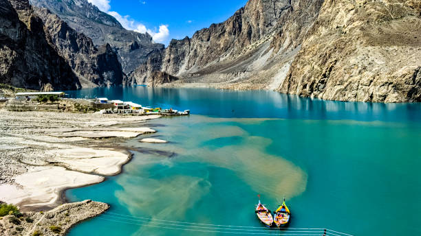
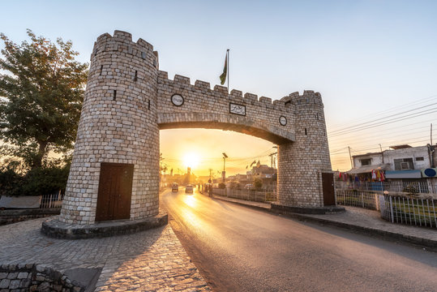

Gilgit-Baltistan

Description: A region known for its mountains, valleys, and natural beauty.
Attractions: Hunza Valley, Skardu, Fairy Meadows
Best Months: May – September
Culture/Food: Chapshuro, Buckwheat bread, Yak meat
Cost Range: PKR 25,000 – 70,000
Khyber Pakhtunkhwa (KPK)

Description: A lush green province with historical sites and scenic valleys.
Attractions: Swat Valley, Malam Jabba, Kalam
Best Months: March – October
Culture/Food: Kabuli Pulao, Chappal Kabab
Cost Range: PKR 15,000 – 50,000